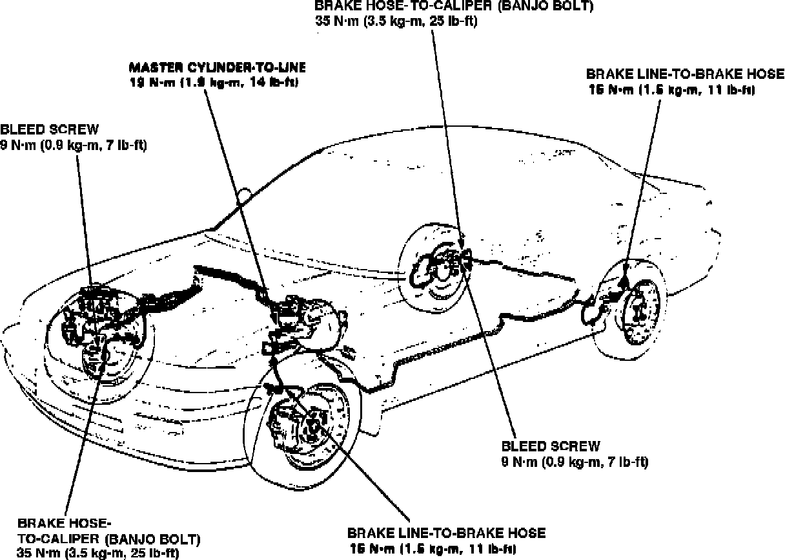

Brake Hose/Line: Service and Repair
Fig. 11 Brake Hose & Line Location:

1. Refer to Fig. 11, for brake hose location.
2. Inspect brake hoses for damage, leaks, interference or twisting.
3. Check brake lines for damage, rusting or leakage. Also check for bent brake lines.
4. Check for leaks at hoses and line joints or connections, retighten as required.
5. Repair any faulty brake hose or line.
6. After repairs bleed brake system as required.